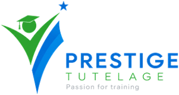
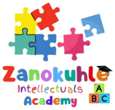

Study with direction
Practise every subject with unlimited questions, DBE past papers, auto-marked assessments and mock exams that adapt to your last score.
EduRance helps learners calculate their APS, see which courses they qualify for, discover careers that suit them and study smarter with AI tutors, past papers and mock exams, with goals, badges and deadline reminders to keep them on track.
Try the free APS calculator → Which universities are still open?
APS scores calculated with EduRance
7 of 10 questions done. APS up from 30 to 32.
Marks and APS, subject practice, past papers, mock exams, career discovery, and the courses, bursaries and learnerships a learner qualifies for, all in one place. Parents can check in through a secure, read-only link.
Practise every subject with unlimited questions, DBE past papers, auto-marked assessments and mock exams that adapt to your last score.
Track your marks and APS over time, set goals, earn XP and badges, and see exactly which subjects to focus on next.
Match your marks to university and college courses, and discover bursaries, learnerships, internships and careers you qualify for.
The dashboard, goals, badges, subject marks and matched opportunities, as a learner sees them.
Add your grade, school, subjects, marks and goals.
Practise with past papers, mock exams, video lessons and AI tutors, guided by your Exam Coach plan.
See your marks, APS history, assessment results, streaks, XP and badges in one place.
AI Tutor, Voice Tutor and AI Career Coach help any time, and parents can follow progress through a secure read-only link.
See the courses, bursaries, learnerships and internships your marks qualify you for, with deadlines.
EduRance links your marks, study plan, career options and funding, and shows what to do next. Save lessons to use offline and switch on data saver to use less mobile data.
AI Tutor explains work step by step, Voice Tutor lets you speak your questions in several languages, and Exam Coach builds a study plan and countdown.
Unlimited practice questions, DBE past papers and memos, revision hubs for every subject, NBT preparation and mock exams that adapt to your level.
A 30-question Career Discovery Assessment, about 158 career pathways, verified bursaries, learnerships and internships, and Work Readiness tools to build your CV, practise interviews and write application emails.
Pick up where you left off in your subjects.
Keep your APS, course matches, practice questions, bursaries and video lessons close with the EduRance app for iPhone and Android, with push reminders that open straight to what needs attention. Mock exams, past papers and Exam Coach are on the web app. Android: tap Download and allow the install. iPhone: open EduRance in Safari, tap Share, then Add to Home Screen.
EduRance is built and supported by organisations working with South African learners every day.

Founding and training partner. A SAQA and QCTO-accredited training provider that builds EduRance and delivers its tutoring and career guidance.

Community partner. A non-profit running early childhood, after-school, and skills and youth development programmes in Alexandra, Johannesburg.
Start with your APS and see where your marks can take you.